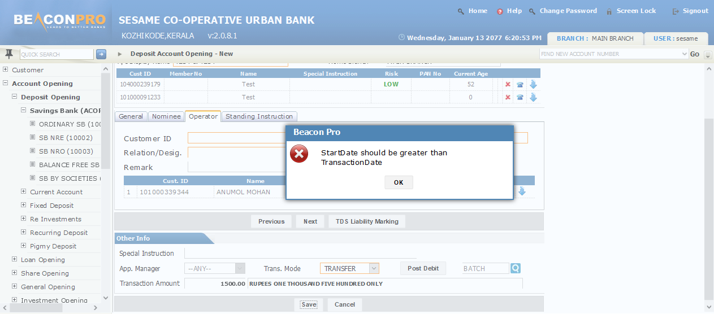

| # | Step Description | Status | Comment |
| 1 | Login to the application | Pass | -- |
| 2 | Collapse menu | Pass | -- |
| 3 | click on account opening | Pass | -- |
| 4 | click on deposit opening | Pass | -- |
| 5 | click on Savings bank | Pass | -- |
| 6 | click on ordinary SB | Pass | -- |
| 7 | Select Nature of SB as JOINT | Pass | -- |
| 8 | Click on OK button | Pass | -- |
| 9 | Read customer id | Pass | Customer ID: 104000239179 |
| 10 | Enter Second customer | Pass | Customer ID: 101000091233 |
| 11 | Enter SB opening amount | Pass | -- |
| 12 | Click on GetValue button | Pass | -- |
| 13 | Click on Next button | Pass | -- |
| 14 | Select relation | Pass | -- |
| 15 | Click on search button | Pass | -- |
| 16 | Switch Window | Pass | -- |
| 17 | Enter nominee name | Pass | -- |
| 18 | Click on Search button | Pass | -- |
| 19 | Click on the link | Pass | -- |
| 20 | Switch Window | Pass | -- |
| 21 | Click on ADD button | Pass | -- |
| 22 | Wait till Nominee row is added | Pass | -- |
| 23 | Click on Witness tab | Pass | -- |
| 24 | Click on Operator search button | Pass | -- |
| 25 | Switch window for seraching operator | Pass | -- |
| 26 | Enter nominee name | Pass | -- |
| 27 | Click on Search button | Pass | -- |
| 28 | Click on the link | Pass | -- |
| 29 | Switch Window | Pass | -- |
| 30 | Enter Ralation with operator | Pass | -- |
| 31 | Click on Power Of Attorney check box | Pass | -- |
| 32 | Click on the Add button | Pass | -- |
| 33 | Click on the Next button | Pass | -- |
| 34 | Click on the check box to add Standing instruction | Pass | -- |
| 35 | Select Product name | Pass | -- |
| 36 | Enter Standing instruction Account Number | Pass | SB AccNO: 02089 |
| 37 | Enter frequecny | Pass | -- |
| 38 | Select frequency type | Pass | -- |
| 39 | Enter amount | Pass | -- |
| 40 | Click on previous button | Pass | -- |
| 41 | Select Transaction mode | Pass | -- |
| 42 | Click on post debit button | Pass | -- |
| 43 | Swith to Autoposting window | Pass | -- |
| 44 | Select Product group | Pass | -- |
| 45 | Select Product name | Pass | -- |
| 46 | Select Intr.Type | Pass | -- |
| 47 | Calculate and Enter Amount to be collected | Pass | -- |
| 48 | Enter Transaction Account number | Pass | SB AccNO: 02303 |
| 49 | Click on Add button | Pass | -- |
| 50 | Wait till the record is added | Pass | -- |
| 51 | Click on Submit button | Pass | -- |
| 52 | switch to main Window | Pass | -- |
| 53 | Click on SAVE button | Pass | -- |
| 54 | Click on Print button | Fail |
 SB_OrninarySBSummary_PrintButton is not displayed or not identified |